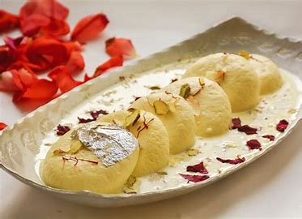
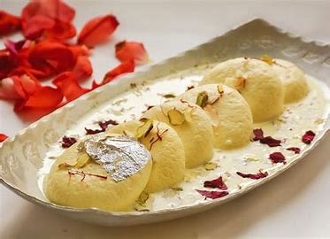
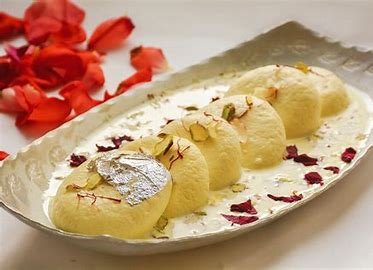

.jpg) 

I absolutely love Ras Malai because it’s the perfect combination of textures and flavors. The milk discs are so soft and spongy, they just melt in your mouth, while the creamy milk syrup is rich and velvety. The hint of saffron and cardamom adds an aromatic touch that makes every bite feel luxurious. Visually, it’s stunning – the white discs in the golden syrup with colorful nuts on top make it look as good as it tastes. It’s not overly sweet, which I appreciate, and the slight crunch from the nuts adds a great contrast. Plus, Ras Malai always reminds me of festive occasions and celebrations, making it not just a dessert, but a cherished memory. It’s indulgent yet comforting, and that’s why it’s my favorite sweet treat.

When Ras Malai is ready, it should have soft, spongy cheese discs that are perfectly circular, flat and white. The milk syrup will be a creamy, pale yellow with hints of saffron. It should smell sweet and milky with noticeable saffron and cardamom aromas. The taste will be rich and creamy, mildly sweet, with subtle flavors of saffron and cardamom. Chopped nuts on top add a nice crunch and vibrant color. The overall texture should be smooth and velvety.It will just melt in your mouth 🫨😋